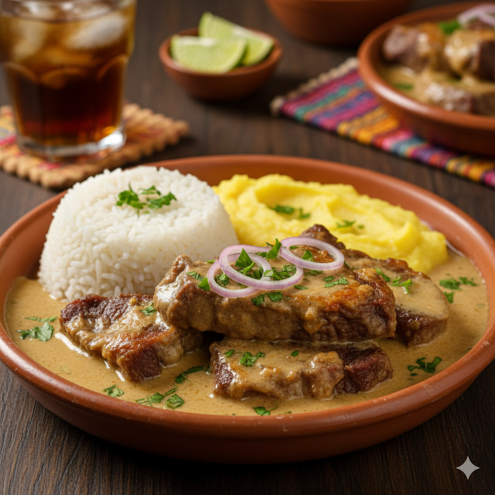
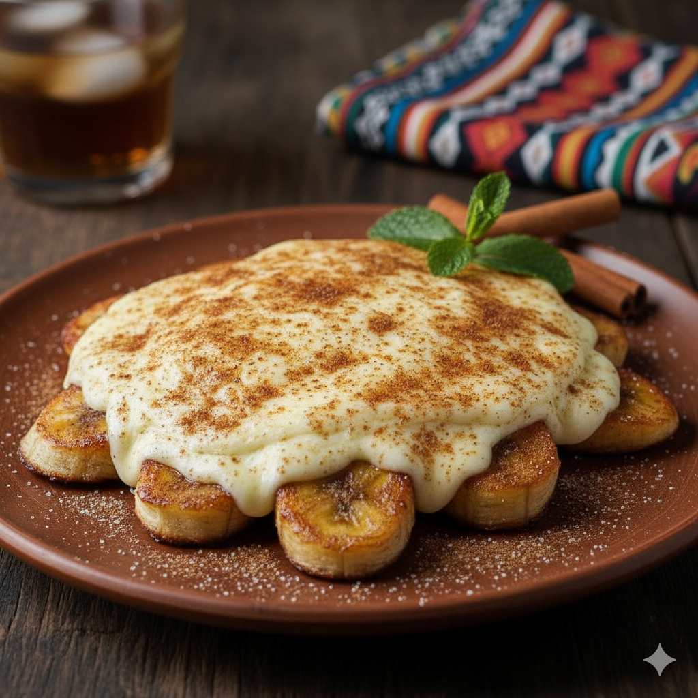
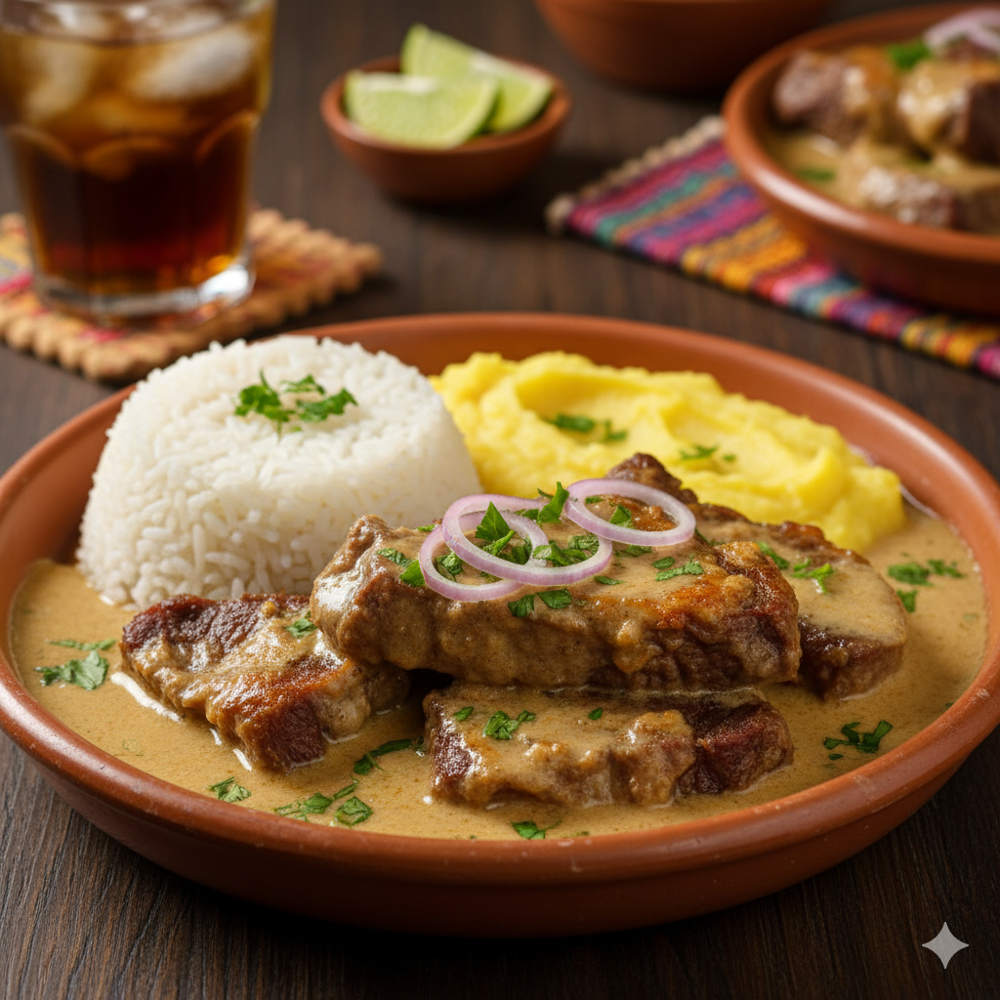
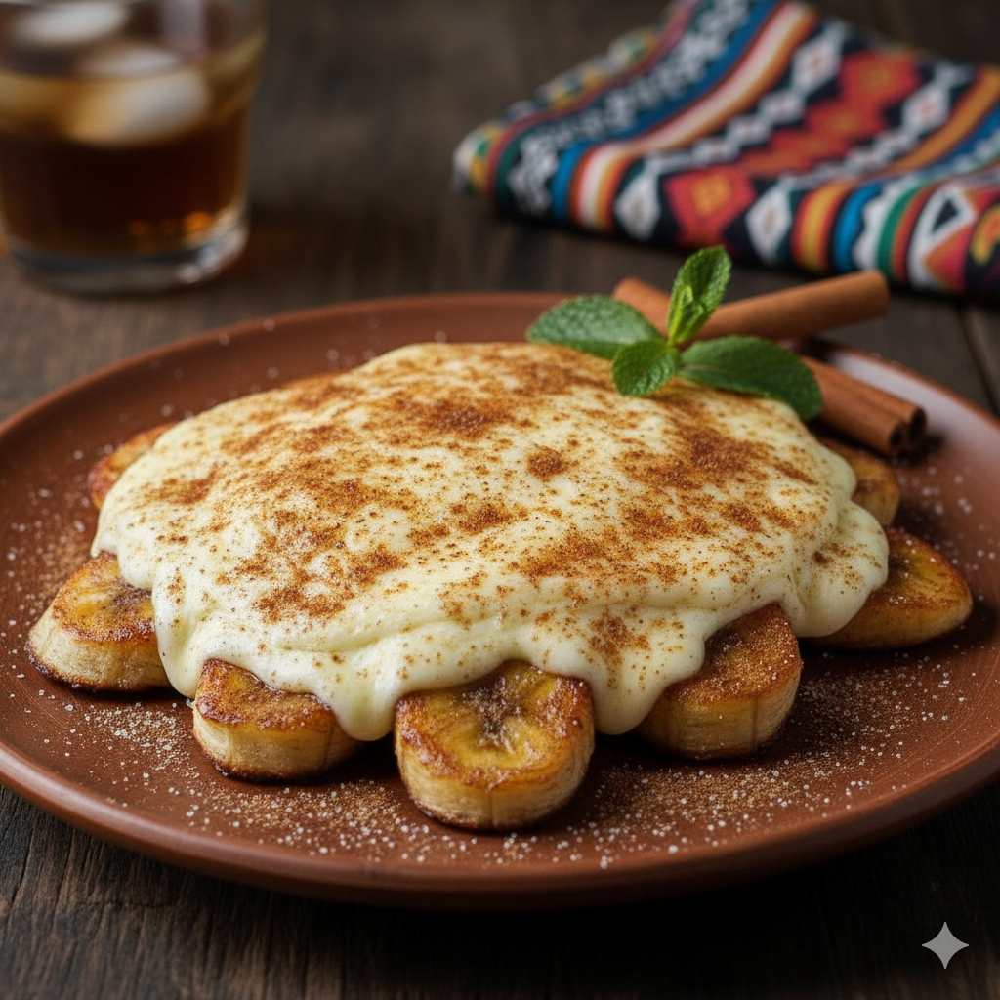

Bem-vindo ao Raiz Sertaneja, um refúgio de sabores autênticos do nosso sertão em plena cidade. Nossos pratos resgatam a tradição da comida afetiva, com aquele toque de modernidade que surpreende o paladar. Aqui, cada ingrediente conta uma história.
 



Nossos Diferenciais
- Receitas de Família: Nosso cardápio é um tesouro de receitas passadas por gerações.
- Feito no Forno a Lenha: O sabor inconfundível da comida preparada lentamente no calor da lenha.
- Forró e Poesia: Desfrute de música ao vivo e saraus culturais em noites selecionadas.